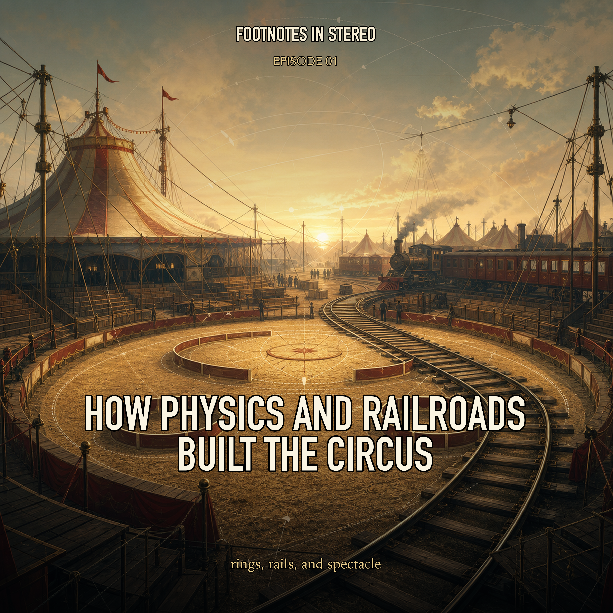

Episode 1 · Public episode
How Physics and Railroads Built the Circus
How did a circular horse ring, rail logistics, clown traditions, and three-ring staging turn circus into a portable technology of spectacle? Mira and Theo follow Philip Astley's ring, Joseph Grimaldi's whiteface legacy, Dan Rice's political clowning, Barnum & Bailey's scale, and the railroad systems that made the American circus sprawl possible. Created with Gemini Notebook.
Sources
- The story of circus - V&A
- Circus clown - Wikipedia
- Joseph Grimaldi: King of the clowns | London Museum
- History of Clown - iClown
- Dan Rice - The Circus Ring of Fame
- Why Does a Circus Have Three Rings? | The Children's Museum of Indianapolis
- Barnum and Bailey Circus history and Photos
- Reconstruction, Railroads, and Race (Chapter 2) - The Cambridge Companion to the Circus
- The American Circus in All Its Glory | National Endowment for the Humanities
- It's a Three-Ring Circus: How Morally Educative Practices Are Undermined by Institutions - Cambridge University Press & Assessment
Transcript
Machine transcript; lightly formatted and subject to correction.
I want you to close your eyes for a second, well, if you can, obviously, and conjure up
a very specific, unforgettable smell.
Oh, I think I know exactly where this is going.
Right.
It is this wildly complex aroma.
You've got the sharp sweetness of caramel sugar burning on a cotton candy machine, and
that is mingling with the faint, kind of earthy reek of animal manure, freshly scattered sawdust,
and hot roasted peanuts.
Yeah, it's a sensory cocktail.
Yeah.
And it just instantly transports you.
Exactly.
When that scent hits you, you know exactly where you are, and you know you are about
to witness something completely uncanny.
You're at the circus.
It really is unique.
I mean, the moment you cross the threshold of a circus tent, you're stepping into a
space that deliberately operates outside of normal time, like outside of normal societal
rules and seemingly outside of normal physics.
Okay, let's unpack this, because today's deep dive is venturing right into the heart
of that exact sensory overload.
And we have a ton of material to cover today.
We really do.
We have this massive stack of sources in front of us, historical texts, academic papers,
biographies, and they all trace the evolution of the circus.
So our mission as your cultural historians today is to explore how this entertainment
juggernaut morphed from a single muddy ring in London into a massive American railroad
empire.
And then, of course, how it faced near extinction and completely reinvented itself for the modern
era.
Right, exactly.
So before we get to the extravagant wonderland, you're probably a picture in your head.
We have to start with the fact that the modern circus was actually just a practical solution
to a physics problem.
Yeah, a literal math and physics equation.
So if we rewind to London in 1768, we meet a man named Philip Astley.
The father of the modern circus, right?
Yes, he's widely considered the father of the modern circus.
But he wasn't a theatrical producer or anything like that.
He was a six foot tall ex cavalry man.
Which is pretty tall for the 1700s.
Very tall.
And the Seven Years War had just ended, meaning you suddenly had this huge surplus of highly
skilled, entirely unemployed cavalry soldiers who were just looking for a way to make a
living.
Right.
They have all these equestrian skills and nowhere to use them.
Exactly.
So Astley and his wife, Patty, they opened a writing school to teach and perform trick
writing.
And I have to mention Patty here because according to the sources, she was an absolute powerhouse.
She was incredible.
I mean, she was an expert writer herself.
The text describe her circling the performance ring at top speed with swarms of live bees
covering her hands and arms like a muff, which is just terrifying.
Can't even fathom the nerve that takes.
But so Philip is experimenting with the geometry of this performance space and he hits a wall
like writing in a straight line or an irregular shape doesn't give him the stability he needs
to actually stand upright on the back of a galloping horse.
Yeah, because when a horse gallops in a straight line, its center of gravity shifts unpredictably.
There's no lateral force to anchor the rider.
So if you stand on its back, the slightest shift in momentum just sends you flying onto
the ground.
But through trial and error, Astley discovers that a 42 foot diameter ring is the absolute
mathematical ideal for equestrian trick writing.
Wait, I need to pause you there.
42 feet exactly.
Exactly 42 feet.
Are we saying the iconic circus ring wasn't originally designed to be like a magical,
intimate theatrical space?
Basically a giant physics centrifuge created by unemployed soldiers trying to keep from
breaking their necks.
What's fascinating here is that form followed function completely.
The 42 foot ring wasn't some artistic choice, it was an engineering requirement.
Wow.
Yeah, when a horse gallops in a circle of that exact diameter at a specific speed, the
centrifugal force generated by the turn pushes the rider's weight outward and down.
Oh, like at an angle.
Right, at an angle right into the horse's back, it provides a physical anchor.
Think of, think of spinning a bucket of water over your head.
Oh, sure.
The water stays in the bucket because of that outward force.
Exactly.
Astley was using that same centrifugal force to basically pin himself to the horse.
So necessity literally dictated the art.
That is amazing.
And he ends up building a roof over this 42 foot ring so they can perform year round.
Right, the weather in London isn't exactly great for outdoor shows all the time.
Yeah, no kidding.
But I imagine simply watching horses run in a circle, even with someone standing on them,
gets kind of monotonous for an audience after a while.
Well, audiences always demand novelty, you know, they get bored easily.
To break up the pacing and crucially give the horses a rest, Astley started bringing
in performers from the local fairs and pleasure gardens.
Like jugglers and acrobats.
Exactly.
Jugglers, acrobats, rope walkers.
And then he did something really important.
He created the very first circus clown act.
Oh, right.
The Taylor of Brentford.
Yes.
In this act, he plays a civilian attempting a comic, highly inept journey on horseback.
That dynamic is just brilliant because you place the jaw dropping skill of the actual
trick riders right next to the deliberate clumsiness of the clown.
It creates a tension and release that audiences still crave today.
Yeah.
You need the laugh to relieve the stress of watching the dangerous tricks.
Absolutely.
And strangely enough, Astley didn't even call his creation a circus.
I found this part of the reading so funny.
Oh, the Charles Dibdin thing?
Yeah.
The sources point out that his rival, Charles Dibdin, actually coined the term.
He opened a competing venue nearby called the Royal Circus, basically stealing Astley's
entire formula and slapping a fancy Latin name on it.
Which is so typical of the entertainment industry even back then.
But Astley's formula worked because the intimacy of that 42-foot ring allowed the audience
to see everything.
Right.
You're right up close.
Yeah.
You can see every bead of sweat, every trembling muscle.
Yeah.
But when the concept eventually crossed the Atlantic to the United States, that intimacy
collided with the American appetite for relentless expansion.
Oh, yeah.
The British model was about to be completely exploded.
Utterly exploded.
So up until about 1872, American circuses were still using that single ring, dragging
these heavy wooden wagons through the mud from town to town.
It was a brutal life.
Very slow, very labor intensive.
Right.
But then you get entrepreneurs like Dan Costello, William Cameron Koo, and a guy you've definitely
heard of, P.T. Barnum.
Naturally.
And they decide the old way is just too slow, it's too small, and most importantly, it's
not profitable enough.
So they introduced the railroad circus model.
And this is just a story of extreme industrialization.
Instead of getting stuck in the mud, Barnum, Koo and Costello load the entire massive operation,
the tents, the menageries, hundreds of performers onto specialized railroad flat cars.
It's hard to even picture the logistics of that.
It was incredible.
They moved at night, hitting a brand new town every single day.
The logistics were so highly evolved using specialized steel ramps and synchronized pull
rope systems to load and unload wagons in just minutes that the Prussian military actually
sent officers to America just to study the circus's transportation mechanisms.
Wait, the actual Prussian military?
Yes.
They realized the circus was moving troops and supplies more efficiently than any army
in the world.
That is wild.
And to give you a sense of the scale we're talking about, Ringling Bros would eventually
use up to 84 train carriages to move their show.
84 train cars, but okay, if you are paying to operate an 84-car private train, your overhead
is astronomical.
Oh, definitely.
So you have to sell way more tickets, which means you need a much bigger tent.
But here's my question.
If Astley's 42-foot ring was mathematically perfect, why not just make the ring 100 feet
wide to fill the new, bigger tent?
Well, because physics doesn't care about ticket sales.
Good point.
If you widen the ring to 100 feet, the curve becomes too shallow.
The centrifugal force drops significantly, and the trick riders literally fall off their
horses.
Oh, because they lose that anchor.
Exactly.
The 42-foot ring was non-negotiable, so their solution wasn't to make the ring bigger.
It was to simply add a second 42-foot ring to the tent.
Oh, wow.
So they just copy-pasted the ring.
Basically, yeah.
Doubling the displays and allowing them to expand the seating capacity entirely around
it.
And the escalation doesn't stop there.
Because in 1873, a rival named James A. Bailey opens his own massive show.
They battle it out for a few years.
By 1881, Barnum and Bailey merge.
The famous merger.
Right.
And by 1882, they drop a third ring into the tent, the iconic three-ring circus is born,
and suddenly you have crowds of over 10,000 people at a single show.
It's a massive leap in scale.
But our academic sources point out a really heavy cost here.
The literature notes a severe shift from artistry to spectacle.
Yes, the academic texts are very clear on this.
In a single ring, the performer has complete autonomy.
Right.
They control the pacing, their interaction with the crowd, the building of tension.
But in a three-ring circus, the performers in the outer wings are stripped of that control.
They are basically forced to synchronize their movements to the music and the timing dictated
by whatever is happening in the center ring.
Here's where it gets really interesting.
Because the way you describe that, it sounds exactly like the Industrial Revolution hitting
the factory floor.
Oh, that's a great way to put it.
Right.
Like if Astley's one-ring circus was a master craftsman building a whole car by hand, Barnum's
three-ring circus was an assembly line.
Yes, exactly.
The performer isn't a solo artist anymore.
They're just tightening a single bolt while 10,000 people watch the factory hum.
The artists basically become cogs in a machine.
If we connect this to the bigger picture.
The three-ring circus perfectly mirrored the industrial and imperialistic spirit of
the American Gilded Age.
Oh, for sure.
It prioritized volume and profit over individual artistic development.
And the clowns, perhaps, suffered the most from this shift.
Really?
Why the clowns specifically?
Well, before this, a clown was a highly respected solo artist who built a slow, nuanced rapport
with an audience.
They used subtle physical comedy.
But subtle physical comedy is completely invisible to someone sitting in the back row of a tent.
10,000-seat tent.
Oh, right.
You can't see a raised eyebrow from a football field away.
Exactly.
So complex solo clowns were replaced by chaotic troops of slapstick performers.
Their main job was literally just to provide loud, colorful distraction during equipment
changes in the rings.
That's kind of depressing, honestly.
It is.
In fact, Charlie Chaplin, who was a master of subtle physical comedy, he openly lamented
this.
Really?
What did he say?
A clown named Marceline, who was a huge star, completely swallowed up and lost in what Chaplin
called the vulgar extravagance of the three-ring circus.
Vulgar extravagance?
That is a harsh, but probably accurate critique from Chaplin.
Yeah.
Broke his heart to see the artistry diminish like that.
That is genuinely tragic for the art form.
But evolution forces adaptation.
Because the physical space changed so drastically, the performers had to adapt visually just
to survive in that environment.
They had no choice.
Right.
If the back row can't see your subtle facial expressions, you have to create a visual identity
that basically hacks the human eye from 300 feet away.
And this necessity leads directly to the evolution of the three main traditional archetypes of
the circus clown.
The ones we still recognize today.
Yes.
And the oldest, and arguably most sophisticated of these, is the white face clown.
The boss clown.
Exactly.
The white face traces its modern roots back to early 19th century England and a performer
named Joseph Grimaldi.
He's widely considered the father of modern clowning.
Okay.
Grimaldi did something revolutionary for the time.
He abandoned the traditional theatrical masks of the era, and instead he painted his entire
face and neck with stark white grease paint.
Then he added these large, striking red triangles on his cheeks.
But the white face makeup wasn't just an artistic aesthetic, right?
It was an optical hack.
Yes.
It exploits human facial recognition.
The high contrast geometric shapes out of a stark white background with giant, exaggerated
red and black features, they act like a neurological megaphone.
A neurological megaphone.
I love that.
The human brain can read those painted expressions from hundreds of yards away, even through
the haze of early gaslighting or super dusty circus tents.
That makes total sense.
And Grimaldi's visual identity was so arresting, and his physical comedy was so intense.
I mean, he essentially destroyed his body for the art that none other than Charles Dickens
actually edited his memoirs.
White Charles Dickens, the novelist.
The very same.
And to this day, circus clowns still refer to themselves as Joey's in Grimaldi's honor.
I had always wondered where that term came from.
Okay.
So the white face is the strict, intelligent, authoritarian figure in the ring.
Right.
But a boss is useless without an employee to order around, which brings us to the second
archetype, the August.
Ah, yes, the August.
The August is the zany, clumsy, least intelligent clown.
They wear a flesh tone, base makeup, a big red nose, and baggy, mismatched, just overwhelmingly
loud clothes.
And the legend of how the August was created is just fantastic circus lore.
It's one of my favorite stories from the sources.
The story goes that in 1869, an American acrobat named Tom Belling was performing in Germany,
and supposedly he was confined to his dressing room for missing a trick or misbehaving.
So just messing around, he put on some ill-fitting clothes to mock the strict show manager.
As you do.
Right.
But the manager walked in, Belling panicked, ran away, and ended up tumbling directly into
the actual circus ring, tripping over the ring curb.
Oh no.
In front of the audience.
In front of everyone.
He scrambled to get up, tripped again, and the German audience began shouting, August.
Which translates roughly to fool or idiot.
That is amazing.
And the manager realized they got a massive laugh, so he ordered him to do it every single
night.
I love the idea of an accidental archetype.
He just tripped and history was made.
And that dynamic was perfected in the 20th century by the duo Footit and Chocolat, right?
Yes.
They were hugely influential.
Footit was an English whiteface, haughty, physically abusive, the ultimate authority.
And Chocolat, played by a Cuban-born black orphan named Rafael Padilla, was the August.
He was a lazy, hapless scapegoat who tried to maintain his dignity while failing spectacularly.
Exactly.
They really cemented that duo dynamic.
And then we get the third major archetype, which feels distinctly American.
The tramp, or hobo clown.
Yes.
The tramp emerged from the social upheavals of the American Civil War and, a bit later,
the Great Depression.
Right.
This character is characterized by tattered clothes, a perpetually downturned mouth, and
a thick, dark five o'clock shadow painted on the lower half of the face.
Which is such a specific look.
Very specific.
Performers like Emmett Kelly, who created the famous character Weary Willy, they really
mastered this.
And Charlie Chaplin's cinematic little tramp character is actually a direct evolution of
this circus archetype.
So what does this all mean for us today?
Like when you look at the whiteface, the August, and the tramp, aren't we just looking at cheap
slapstick?
Or is there a deeper psychological blueprint at play here?
Because honestly, it sounds remarkably like the setup for a modern workplace sitcom.
Oh, it completely is.
You know, you have the strict, serious boss dealing with the goofy, chaotic employee.
It is a profound psychological blueprint.
These archetypes endure across centuries because they represent universal societal hierarchies.
Wow.
Yeah.
Think about your own life.
We all have bosses, landlords, politicians, people who hold power over us.
Sure.
The circus wing provided a socially sanctioned, totally safe space for the audience to watch
the strict, upper class authority figure the whiteface get constantly undermined, humiliated,
and frustrated by the foolish, working class, every man, the August.
Oh, that's brilliant.
It's a subversion of power dynamics.
It gives the audience a much needed psychological release valve.
It's incredibly deep psychology dressed up in oversized shoes and red noses.
But okay, let's fast forward to the modern era because that massive industrial three-ring
machine we talked about, the one that forced these optical hacks and broad archetypes in
the first place, it eventually starts to collapse under its own weight.
It does.
The decline of the traditional American robot circus was driven by a massive shift in how
we consume media and really changing cultural values in the late 20th and early 21st centuries.
Right.
You had the advent of high definition television and nature documentaries.
Which makes perfect sense when you think about it.
I mean, why would you go to a hot, smelly tent to watch a tiger pace in a cage from
200 feet away when you can watch unprided lions hunting in 4K resolution from the comfort
of your couch?
Exactly.
The spectacle loses its power.
The novelty is just completely gone.
Precisely.
Add to that new occupational safety laws, OSHA regulations that made the logistics vastly
more expensive.
Oh, I bet.
You can't just throw up a massive tent without regulations anymore.
Right.
Unfortunately, there was a dramatic shift in public appetite regarding performing animals.
Animal rights activism exposed the realities of training and confinement.
Which was a long time coming.
Yes.
And this eventually led to Ringling Bros and Barnum and Bailey retiring their iconic elephants
in 2016.
And ultimately, they shut down the entire traditional show in 2017.
But the art form of the circus didn't die with the railroad shows.
It reinvented itself.
And it seems almost counterintuitive, but to save the circus, they had to make it smaller.
They realized that sheer scale had basically killed the artistry.
Right.
So shows like Canada's Cirque du Soleil or the broader New American Circus movement,
they did something radical.
They looked backward to move forward.
They eliminated animals entirely and they returned to the single ring format.
Which is just like Astley's original 42-foot ring.
By stripping away the distraction of the three rings, you eliminate the overwhelming spectacle,
but you restore the vulnerability.
This raises an important question about what audiences truly connect with.
Spectacle numbs you, but vulnerability connects you.
Wow.
Yeah.
In a single ring, the audience can once again see the trembling muscles of the acrobat.
They realize the margin of error is absolute zero.
It's life or death right in front of you.
Yes.
Shows like Cirque du Soleil feature clowns like Rene Bassinet, who can control a massive
audience not with chaotic slapstick, but with just a subtle look or sharp whistle.
Or you look at the Russian performer Slava Polunin, who took clowning to incredible theatrical
heights with Slava's Snow Show.
Without the noise of the assembly line, you can finally appreciate the craftsmen again.
It restores an honest and honestly and ethically sound relationship between the artist and
the viewer.
The draw is no longer about overwhelming volume.
It's about pushing the limits of human capability.
It is a remarkable full circle journey.
It really is.
I mean, think about the ground we've covered today.
We started with Philip Astley tracing a 42 foot circle in the London mud just to counteract
gravity and keep from falling off his horse.
We watched that circle get cloned, expanded, and loaded onto miles of American flat cars
by P.T.
Barnum, transforming into this overwhelming industrial spectacle that literally forced
clowns to hack our visual cortex just to be seen.
And finally, we saw the bubble burst, stripping away all that excess to return to the human-centric
artistry of modern companies like Cirque du Soleil.
Ultimately, the circus acts as a mirror for society, you know, reflecting our changing
appetites for scale, our threshold for danger, and our deep, enduring need for authentic
human connection in a world that is just suffering from information overload.
It's beautifully said.
And as we wrap up, there is one final historical nugget from our sources that perfectly illustrates
just how deeply the circus is embedded in our cultural DNA.
Oh, please share.
So during the 19th century, the cultural power of the circus was so immense that a singing
circus clown named Dan Rice became a household name.
A singing clown.
Yes.
And at the height of his career, Dan Rice was arguably more famous across the country
than Abraham Lincoln.
I'm sorry.
A circus clown was more famous than the president of the United States.
He was.
He was so influential and ambitious that the sources note in 1868 he ran for the U.S.
Senate for Congress and even launched a campaign for the presidency of the United States as
a peace Democrat.
Are you kidding me?
I am not.
But his truly lasting legacy is actually his visual identity.
Okay.
What do you mean?
Dan Rice performed in a striped costume adorned with stars, and he sported a very prominent
angular goatee.
Historians strongly believe that Dan Rice's circus persona served as the direct visual
model for the political cartoonist Thomas Nast when he created the iconic image of Uncle
Sam.
That is genuinely hard to wrap my head around.
The visual inspiration for Uncle Sam was a singing circus clown.
It is incredible to ponder that one of the most serious, enduring symbols of American
political identity was born directly out of the sawdust and grease paint of the circus
ring.
That fact is going to stay with me for a long time.
I mean, wow.
So to you listening, the next time you find yourself under a big top, or even just catch
a whiff of that unforgettable mix of caramel sugar, manure, sawdust, and hot peanuts, remember
that you weren't just smelling a carnival.
You are breathing in centuries of engineering, the logistics of industrial empires, profound
psychological archetypes, and the literal fabric of American history.